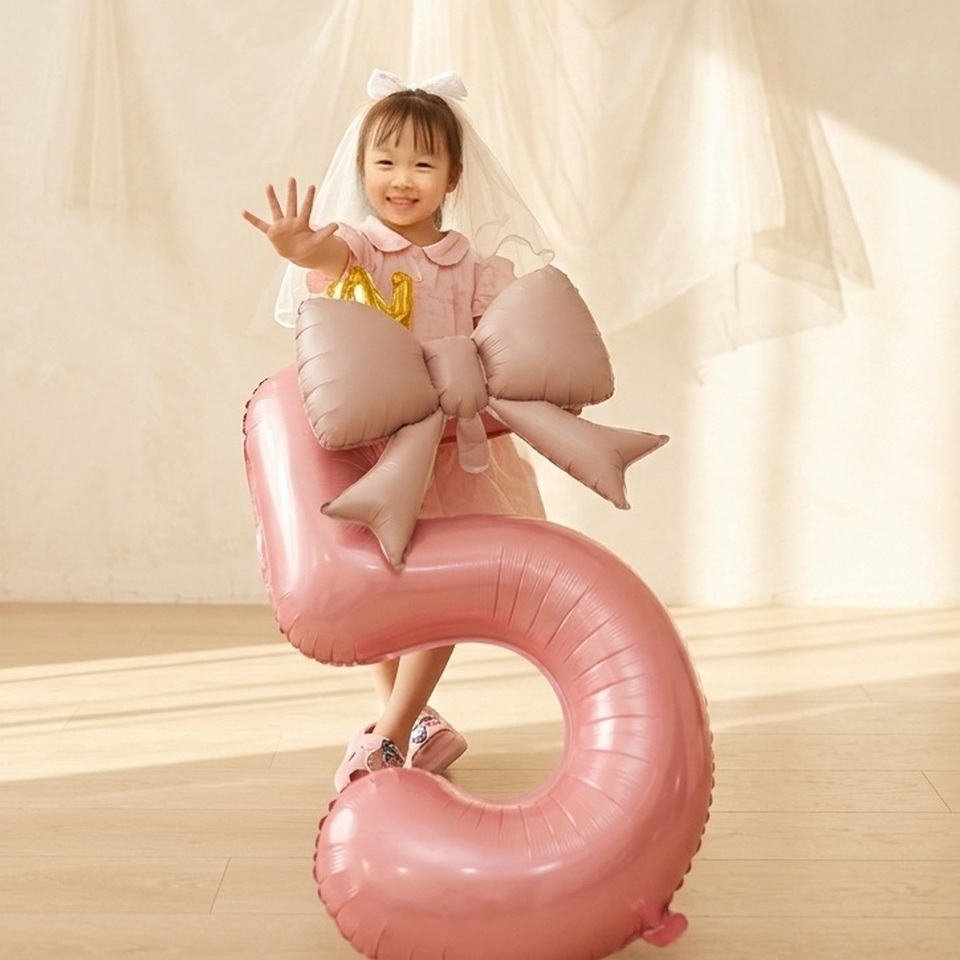
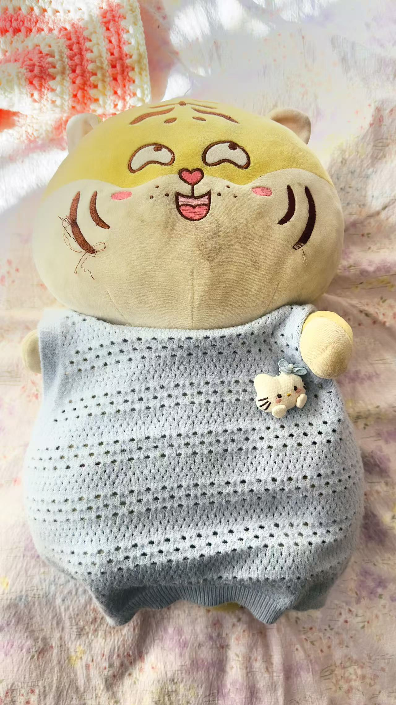
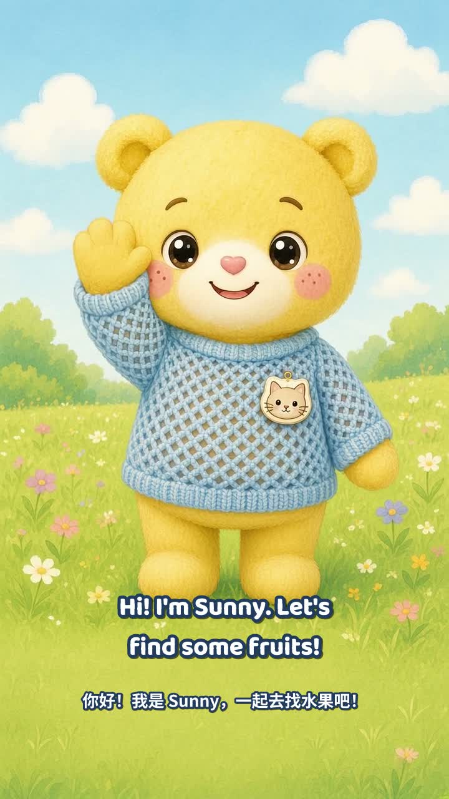
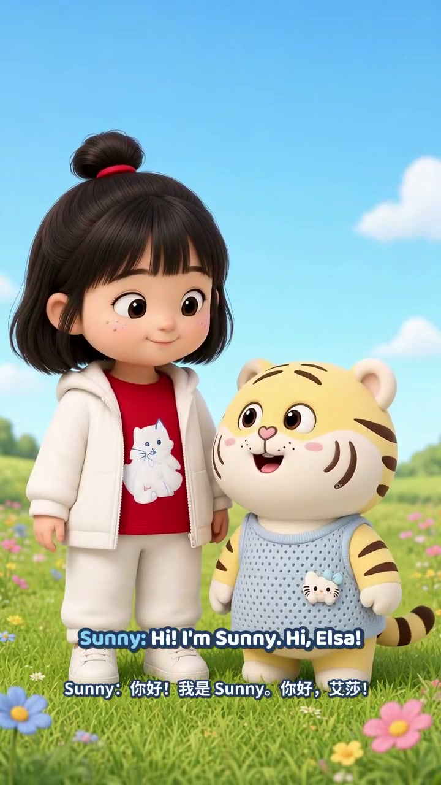
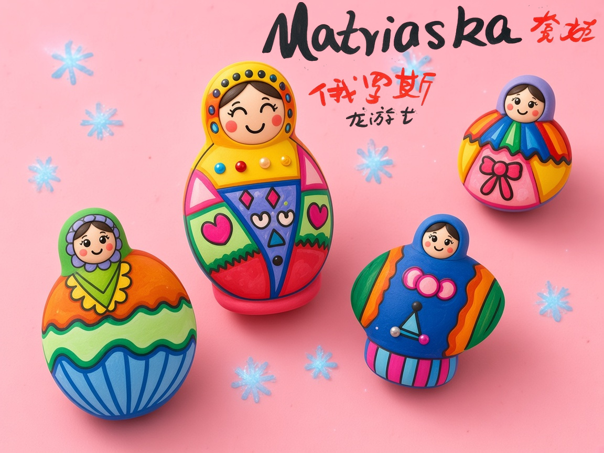
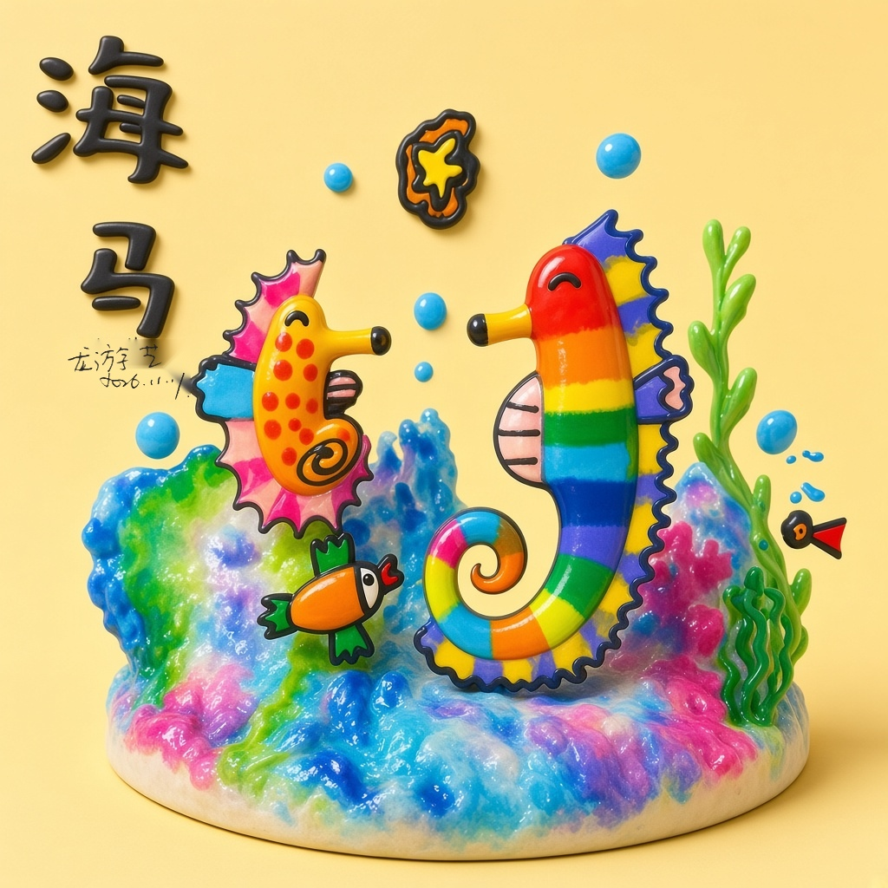
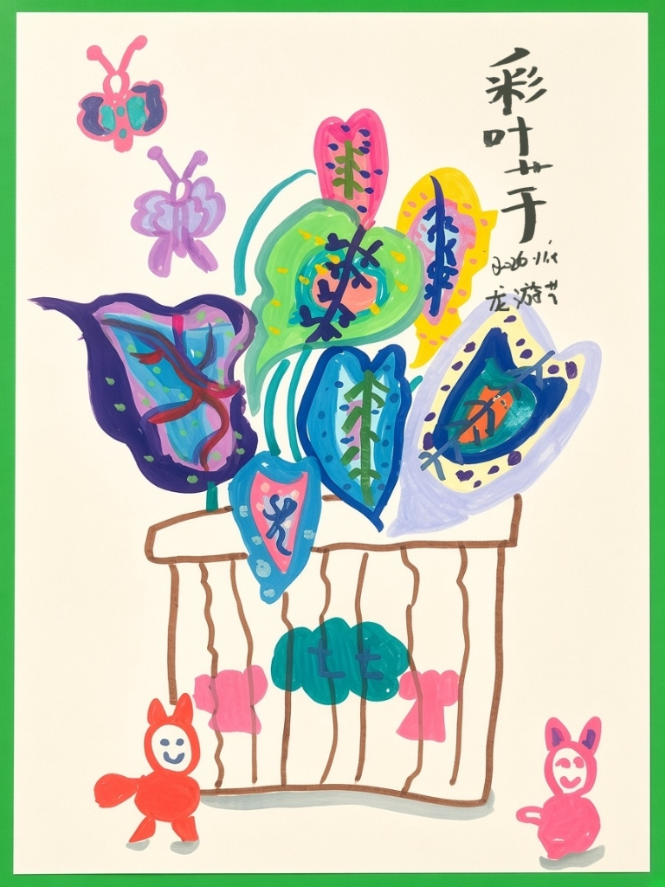
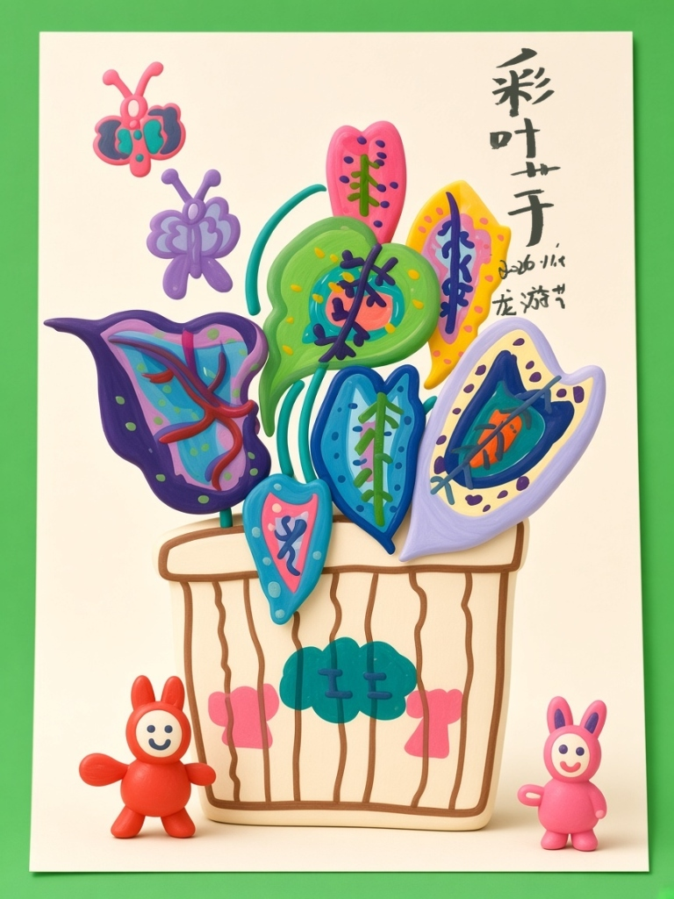
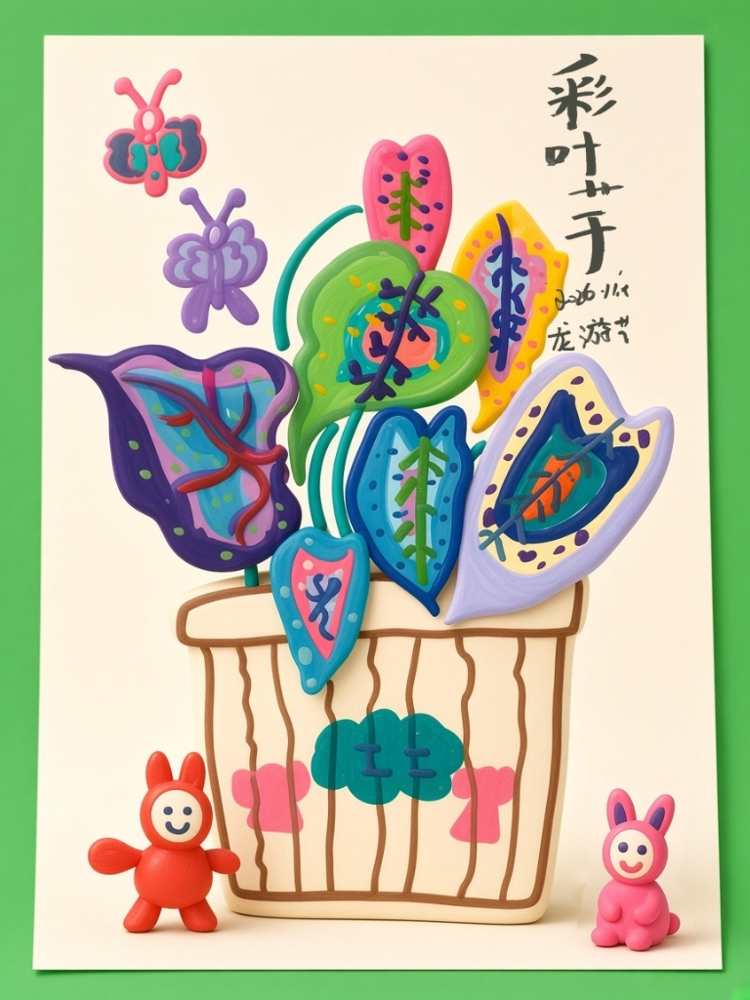
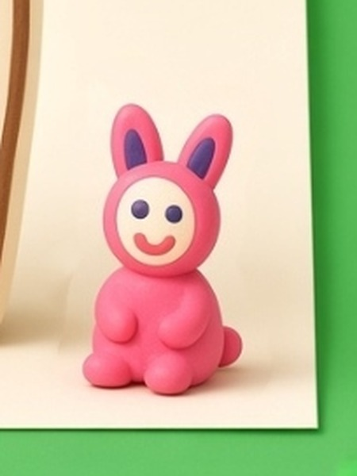

我如何用 Grok Bot
陪 5 岁女儿玩和学？
龙海
前华为 AI 高级产品经理 · AI 实战创作者 · 5 岁女孩的爸爸

开放讨论：育儿第一性原理是什么？
高质量陪伴
从出生到 5 岁，能陪她的周末已过近半
18 岁前同行周末
516个
共 936 周 · 逐年递减
0–5 岁已过去
244个
已用掉约 47%
5 岁之后还剩
272个
初高中合计仅 48 个
0–5 岁已陪伴（244）
5 岁后还剩（272）
长大不再同行
1 行 = 52 周 · 18 岁前按阶段递减估算，18 岁后渐隐示意
灵感来源 X · @thomaszhou_ https://x.com/thomaszhou_/status/2120048570443395161
三个案例：
如何让 Grok Bot 帮助我们更高质量地陪伴孩子？
01
互动
睡前脑筋急转弯，我来出题她来猜
02
学习
让孩子在动画中和喜欢的玩偶一起学英语
03
创作
把孩子的画做成 3D 造型和动画
脑筋急转弯：从需求到方案
需求来源
孩子最近迷上了脑筋急转弯的游戏
以前方案的问题
- 网上搜：质量太差
- 买整本书：不适龄
需要优化
- 题目要好玩、5 岁能听懂
- 使用过程不断优化题库
推导出的方案
出版书作题库 + Grok Bot 筛选改写
使用 Grok Bot 低成本满足需求
Grok Bot 方案优势：随时定制需求
每个有娃的家，大概都有一堆玩偶


到处都是

打入冷宫

偏爱
想法推导
把她偏爱的玩偶和孩子一起放进英语视频里互动，让学习变得更有趣
使用 Grok Bot 实现与优化
实现过程
-
01
故事和台词
水果主题 · 简单双语对话
-
02
角色参考
玩偶与女儿照片 · 锁定形象
-
03
分镜画面
按台词拆镜头 · 保持角色一致
-
04
配音字幕
英文配音 · 双语字幕对齐
-
05
合成成片
自动剪辑 · 输出 48 秒动画
实现过程很复杂，但用自然语言提出诉求就可以
制作一个 Bot，我会给你孩子和玩偶图片，你做一个介绍常见水果的英语动画，动画中孩子和玩偶通过对话一起学习这些英语，不要重复词汇
遇到的问题与优化


01
老虎画成熊 → 补参考图，要求一定要像参考图
02
反复微调 → 女儿能认出自己
寓教于乐，用她喜欢的玩偶做成英语动画
把孩子手绘原画，做成 3D 和动画

01 原画

02 3D 造型
03 6 秒动画
用 Grok Bot 玩起来：发张画就能生成 3D 和动画

013D 造型
026 秒动画
孩子深度参与制作
共创流程
-
01
孩子作画
美术课或平时创作的画
-
02
生成结果
将原图丢给 Bot 即可
-
03
随时修改
自然语言提出需求，随时优化
延展
购买 3D 打印机，可将孩子的画作带入现实世界
自然语言修改案例
需求
右边的小猫是坐着的，你能修改吗？

01 原图

02 第一版图

03 第二版图

04 坐下的小猫
什么是高质量陪伴？
01
注意力完全在孩子身上
02
双方有真实的来回互动
让 Grok Bot 帮助我们更高质量地陪伴孩子
01
实现需求变得空前容易
不必学剪辑或写代码，找素材、出图、做动画都能省下准备时间。
02
可以在使用过程中快速迭代
孩子听不懂、形象不对或想改玩法，对话里补充一句就能当场重做。
03
能实现的场景变得越来越多
睡前问答、双语动画到画作重制，一个想法就能沉淀成专用工具。
以上的门槛都极低，仅仅用自然语言描述即可
从一个小场景开始
01
提供背景、说清楚需求
02
初始版本、沉淀为 Bot
03
快速迭代、不断优化
请别让 AI 把孩子从我们身边推开
让 AI 帮助我们更好的陪伴孩子
你的陪伴无可替代
自我介绍
- 姓名
- 龙海
- 经历
- 前大厂程序员 → 项目经理 → 产品经理，目前 OPC（一人公司）实践中
- 目标
- AI 生活家 ｜ 用 AI 解决生活中的痛点
- 产品
- 拾音 FM｜中国故事｜OhMyX｜PinSnip
记得关注我 https://x.com/longhaiqwe123
联系方式见主页